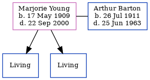

Marjorie Annie Crayford Barton (née Young) 1909 - 2000
[ Home ] | [ Calendar ] | [ Surnames Index ] | [ Errors ] | [ Family History ]Marjorie Young, the wife of Arthur George Barton (the first cousin once-removed on the father's side of Nigel Horne), was born in Herne Bay, Kent, England on 17 May 19091,2,3,4 and. She married Arthur (with whom she had 2 surviving children Brian C and Christopher J) in Blean, Kent, England around Aug 19367.
During her life, she was living at Spicers Farm, Broomfield, Reculver, Kent on 2 Apr 19111; and at Three Ways, Reculver Road in Herne Bay on 29 Sept 19392.
She died on 22 Sept 2000 in Staffordshire, England4,5,6.
Citations
- 1911 Census for England & Wales - Findmypast (was age 1 and the daughter of the head of the household)
- 1939 Register - Findmypast (was recorded at this address)
- England & Wales births 1837-2006 - Findmypast
- England & Wales deaths 1837-2007 - Findmypast
- England & Wales Government Probate Death Index 1858-2019 - Findmypast
- https://probatesearch.service.gov.uk/Wills?Surname=barton&SurnameGrants=barton&YearOfDeath=2000&YearOfDeathGrants=2000&IsGrantSearch=True&IsCalendarSearch=False&sort=FirstName&sortdir=ASC&page=5#wills
- England & Wales Marriages 1837-2005 - Findmypast
Media
England & Wales marriages 1837-2005 - BMD/M/1936/3/AZ/001841/119
1911 Census for England & Wales - GBC/1911/RG14/04360/0219/4
England & Wales births 1837-2006 - BMD/B/1909/2/AZ/000684/286
1939 Register - TNA-R39-1741-1741D-003-26
England & Wales Deaths 1837-2007 - BMD-D-2000-9-83517263
England & Wales Government Probate Death Index 1858-2019 - GBOR/GOVPROBATE/B/1999-1900/00023483
Family Tree
Map
Generated by ged2site. Last updated on Jul 3, 2024
Known Issues
Listed in the residence for 29 Sep 1939, but spouse Arthur Barton is not
No records of living with anyone